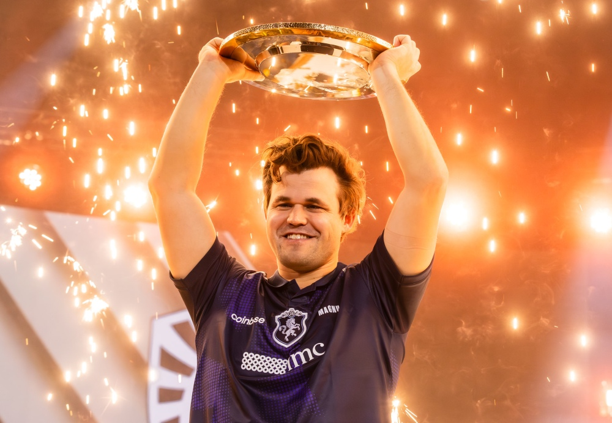
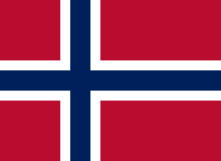
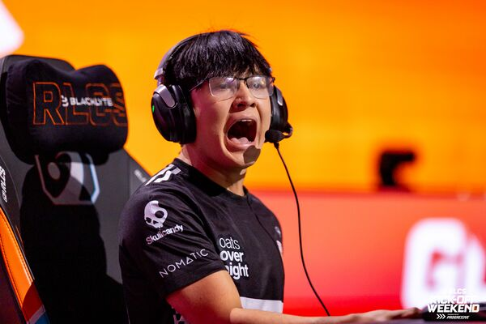
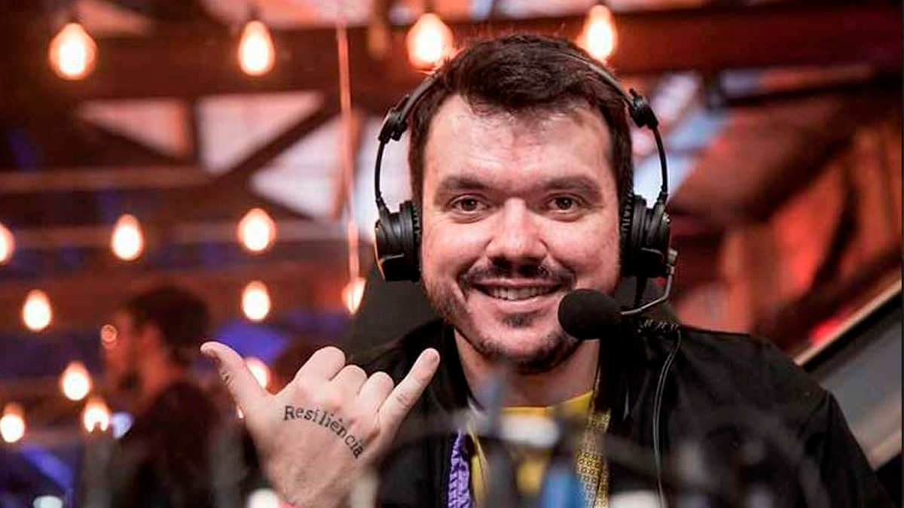
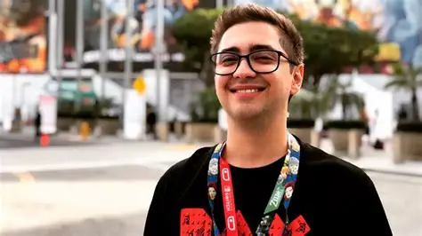
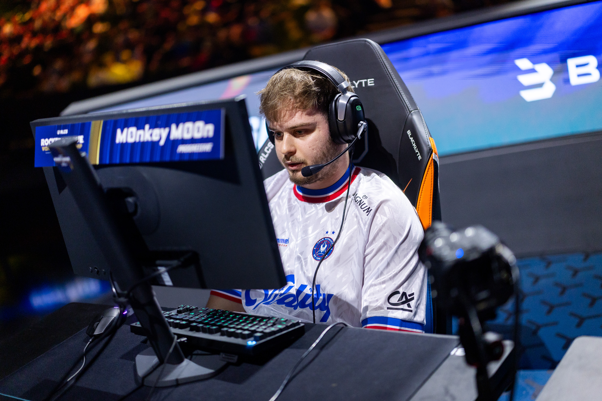

Celebrando jogadores, criadores de conteúdo e personalidades que elevaram o cenário competitivo a outro nível.


 Lee "Faker" Sang-hyeok
Lee "Faker" Sang-hyeok
League of Legends
Considerado o maior jogador da história do League of Legends,
Faker tornou-se símbolo de excelência, longevidade e domínio
absoluto no cenário competitivo mundial.
Equipes: T1 Esports
Títulos conquistados
4x Campeão Mundial de League of Legends
2x Campeão do MSI
10x Campeão da LCK
Assinado,
Faker

 Oleksandr "s1mple" Kostyliev
Oleksandr "s1mple" Kostyliev
Cs2
Amplamente reconhecido como um dos jogadores mais talentosos e dominantes da história do Counter-Strike,
destacou-se por sua mira surreal, jogadas individuais inacreditáveis e um impacto avassalador em partida.
Equipes: LAN DODGERS, Courage Gaming, Hashtag, HellRaisers, dAT Team, FlipSid3 Tactics, Evolution, Worst Players, Team Liquid, NAVI
Títulos conquistados
PGL Major Stockholm 2021
Intel Grand Slam Season 3
BLAST Premier: World Final
IEM Cologne (2018, 2021)
IEM Katowice
ESL One Cologne
BLAST Pro Series: Copenhagen
StarSeries & i-League CS:GO Season 7
Assinado,
S1mple

 Marcelo "coldzera" David
Marcelo "coldzera" David
Cs2
Duas vezes eleito o melhor jogador do mundo de Counter-Strike, marcou a história do eSport por sua precisão cirúrgica,
frieza em momentos decisivos e por protagonizar uma das jogadas mais lendárias do jogo, imortalizada no mapa Mirage.
Equipes: Dexterity Team, Luminosity Gaming, SK Gaming, MIBR, FaZe Clan, Complexity Gaming, 00 Nation, Legacy, RED Canids
Títulos conquistados
MLG Major Championship: Columbus 2016
ESL One: Cologne 2016
Intel Grand Slam Season 1
ELEAGUE Season 1
EPL Season 3 Finals
EPL Season 6 Finals
IEM Epicenter 2017
ESL One: Cologne 2017
Assinado,
Coldzera

 Tyson "TenZ" Ngo
Tyson "TenZ" Ngo
Valorant
Considerado uma das mentes mais brilhantes e o primeiro grande fenômeno mecânico do Valorant,
marcou a história do jogo por sua mira absurda, mobilidade impecável e por liderar o domínio da Sentinels no início do competitivo global.
Equipes: Indie-Gaming, BADASS, Black Out, Test Takers, SubTropic, ATK, Cloud9, Sentinels
Títulos conquistados
VCT 2021: Stage 2 Masters - Reykjavík
VCT 2024: Masters Madrid
VCT 2021: Stage 2 Challengers NA
VCT 2021: Stage 3 Challengers NA
Assinado,
TenZ

Gustavo "Sacy" Rossi
Valorant
Um dos atletas mais vitoriosos e respeitados dos eSports brasileiros, fez história ao se sagrar campeão mundial no League of Legends no cenário nacional e,
posteriormente, alcançar o topo do mundo no Valorant com uma liderança e inteligência tática inigualáveis.
Equipes: RED Canids, Team One, paiN Gaming, Viking-X, LOUD, Sentinels.
Títulos conquistados
VALORANT Champions 2022
VCT LOCK//IN São Paulo 2023
2x CBLOL
3x VCT Brasil
Assinado,
Sacy

 Danil "donk" Kryshkovets
Danil "donk" Kryshkovets
Cs2
O prodígio mais avassalador da história do Counter-Strike 2. Com uma mira impressionante, agressividade implacável e maturidade técnica fora da curva,
chocou o planeta logo em sua estreia em grandes palcos para se consolidar instantaneamente entre os melhores do mundo.
Equipes: Team Spirit Academy, Team Spirit.
Títulos conquistados
IEM Katowice
BetBoom Dacha Dubai
MVP do IEM Katowice 2024 (o MVP mais jovem da história de um torneio S-Tier de Counter-Strike)
MVP da BLAST Premier Spring Final
Assinado,
Donk

 Axel "Vatira" Touret
Axel "Vatira" Touret
Rocket League
O prodígio francês que redefiniu o nível de excelência no Rocket League. Dono de uma leitura de jogo impecável e de uma consistência defensiva e ofensiva impressionante,
consagrou-se precocemente como um dos atletas mais dominantes e vitoriosos do cenário mundial.
Equipes: Team Queso, Moist Esports, Karmine Corp.
Títulos conquistados
RLCS Spring Split Major
RLCS Fall Split Major
RLCS Winter Split Major
Eleito Jogador do Ano da RLCS (2022-23) e Múltiplo Defensive MVP
Assinado,
Vatira


Sven Magnus Øen Carlsen
Xadrez
O "Mozart do Xadrez" e, para muitos, o maior enxadrista de todos os tempos. Dono do maior rating da história (2882) e de uma intuição posicional incomparável, Carlsen dominou o esporte de forma absoluta,
quebrando recordes de invencibilidade e estendendo seu reinado muito além dos limites tradicionais do tabuleiro.
Equipes: Offerspill Chess Club, Norway Gnomes, Team Liquid.
Títulos conquistados
5x Campeão Mundial de Xadrez Clássico
6x Campeão Mundial de Xadrez Rápido
9x Campeão Mundial de Xadrez Blitz
Campeão da FIDE World Cup
Campeão Mundial de Freestyle Chess (Chess960)
Assinado,
Magnus Carlsen

João "Diaz" Henrique
Rocket League
O jovem prodígio brasileiro que rapidamente se estabeleceu como uma das maiores forças mecânicas e um dos duelistas de 1v1 mais temidos do mundo. Com uma ascensão meteórica,
ele conquistou espaço internacional graças ao seu controle de bola cirúrgico e agressividade implacável no ataque.
Equipes: Timeless, w7m esports, Complexity Gaming, Spacestation Gaming.
Títulos conquistados
RLCS 2026: NA 1v1 Open
RLCS 2025: Raleigh Major - NA 1v1 Open
Salt Mine 4 - North America
RLCS 2026: Paris Major - NA Open 4
Assinado,
Diaz

Alexandre "Gaules" Borba Chaves
Streamer / Influenciador
O lendário capitão que liderou a era de ouro do CS nacional antes de se tornar o maior fenômeno de streaming do Brasil. Como jogador e treinador, pavimentou o caminho para a profissionalização do cenário,
e hoje une a "Tribo" em torno da paixão pelo esporte, mantendo-se como um dos maiores pilares do esporte eletrônico global.
Equipes: (Jogador/Treinador): g3x (g3nerationX), MIBR (Made in Brazil), Crashers, Target Esports.
Títulos conquistados
CPL Brazil (2001, 2003) - Como Jogador
Gamegune (2008) - Como Treinador da MIBR
DreamHack Winter (2008) - Como Treinador da MIBR
Vencedor do Prêmio eSports Brasil: Personalidade do Ano
Assinado,
Gaules

Alan "alanzoka" Ferreira
Streamer / Influenciador
Uma das personalidades mais carismáticas e icônicas do cenário brasileiro, que antes de se tornar um dos maiores streamers de variedade do mundo,
representou o país competitivamente nos primórdios do cenário de Overwatch. Dono de uma legião de fãs fiéis,
ele marcou a história dos esports ao liderar a primeira seleção brasileira em um palco mundial da Blizzard.
Equipes: Brasil (World Cup 2016), Keep Gaming
Conquistas:
Capitão e Representante da Seleção Brasileira na Overwatch World Cup (2016)
Eleito Melhor Streamer do Ano no Prêmio eSports Brasil (2018)
Top 3 no Overwatch Old Spice Tournament (2016)
Assinado,
Alanzoka

Evan "M0nkey M00n" Rogez
Rocket League
A âncora e o cérebro por trás de uma das eras mais dominantes da história do Rocket League europeu e mundial. Conhecido por sua consistência defensiva quase cirúrgica, posicionamento impecável e uma mentalidade ultra-competitiva,
ele consolidou seu nome no topo do cenário mundial ao liderar equipes históricas em campanhas lendárias.
Equipes: ZeNoMoon, ARG, Team BDS, Team Vitality, Twisted Minds.
Títulos conquistados
RLCS 2021-22
RLCS 2021-22: Fall Split Major
Eleito MVP Mundial da RLCS e do Fall Major (2021-22)
Assinado,
M0nkeyM00n